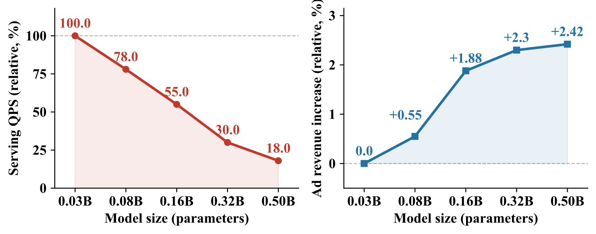
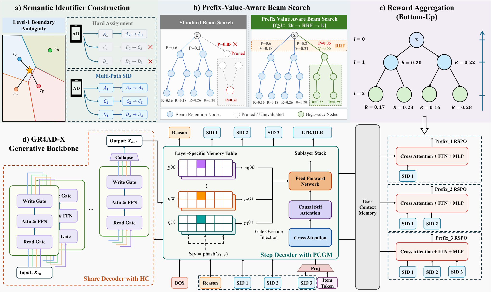
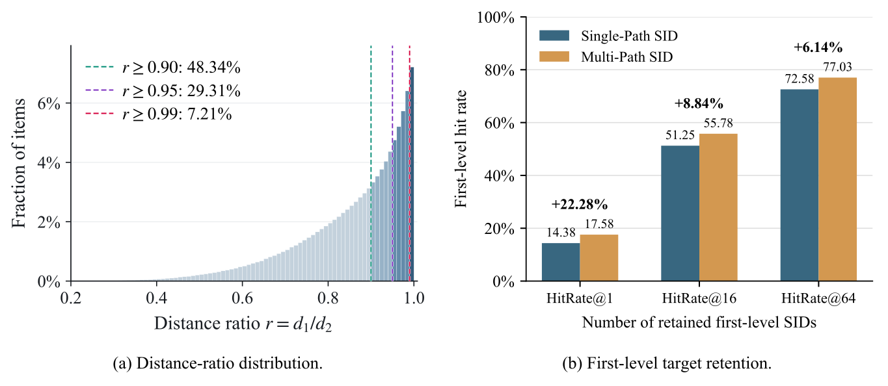
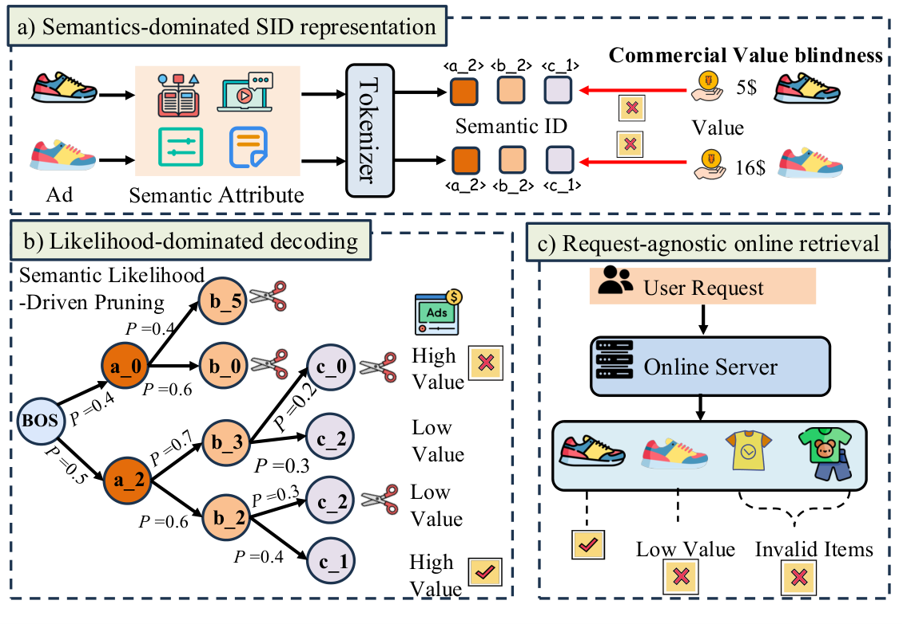
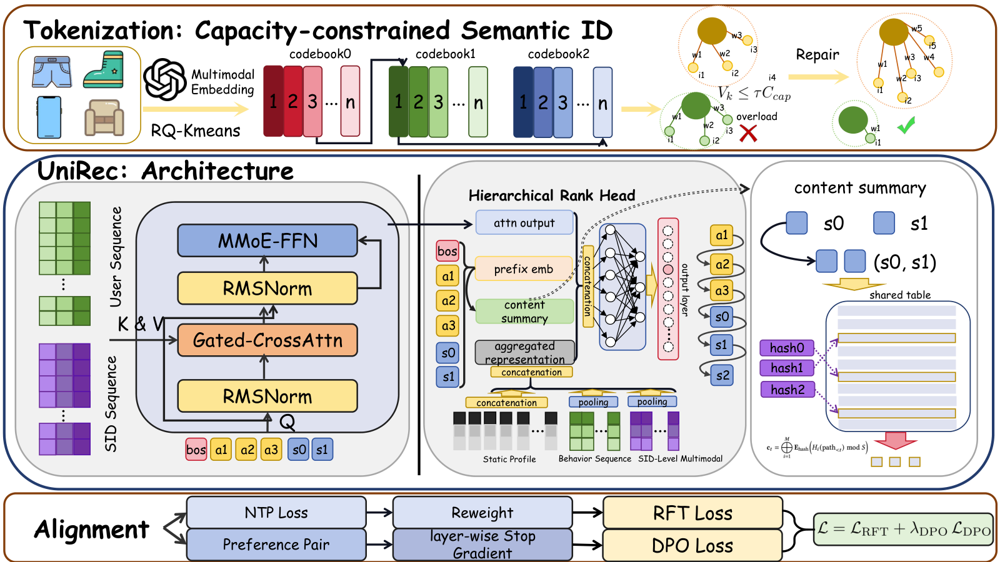
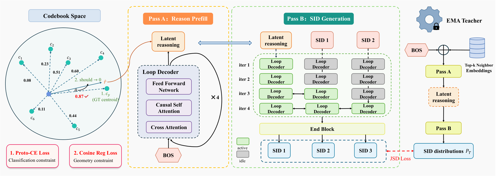

目录 · 9 节
1它到底在解决什么问题？2整体流程：三处改动各管一段3一条广告为什么要有两条 SID？4不把模型做大，容量从哪来？5让生成过程认得收入：价值头、剪枝和重排6实验：每一步各贡献多少7我认为它的局限8一个推荐/搜索团队可以怎么试9结论快手在已上线的生成式广告召回系统 GR4AD 上改了三处，合成 GR4AD-X，线上累计让广告收入比 GR4AD 高 3.07%。三处改动针对同一个错位：模型按生成概率挑广告，平台要的却是收入。快手量过，按生成概率排出的前十名和 eCPM 最高的前十名几乎不重合，命中率只有约 0.02，而且 SID 的每一层都是这样。第一处改 SID：第一层保留离广告最近的两个聚类中心，一条广告因此有两条路径，不会因为一个前缀被剪掉就召不回。第二处加容量：不放大主干，而是加输入信号、加大编码器和 SID 词表的 embedding 等。第三处让生成认得收入：每个 SID 前缀取它下面广告的平均收入当价值，训练每层的价值头去预测它，剪枝时先多留一倍候选，再用 RRF 按每个前缀在概率排名和价值排名里的名次合成一个分数，据此截断，最后再按价值重排一遍。三处改动在线上逐个叠加验证，其中价值对齐这一组贡献了 1.07 个百分点。
它到底在解决什么问题？
先看一个示意场景。某个用户打开短视频，系统要从几百万条广告里召回几百条。生成式召回把每条广告编码成 3 个码的 SID，beam search 一层层往下生成：第一层先决定大类，第二层在大类里细分，第三层是用广告自身特征算出的 hash 码，用来区分同一细类下的不同广告。
| 示意 | 广告 A | 广告 B | 广告 C |
|---|---|---|---|
| 第一层前缀的生成概率排名 | 1 | 2 | 9 |
| 这条广告的 eCPM 排名 | 8 | 5 | 1 |
| beam 只留前 5 个前缀时 | 留下 | 留下 | 被剪掉 |
上面这张表说的就是错位：模型按「生成概率」挑前缀，平台要的是「谁赚钱」。广告 C 的 eCPM 最高，可它挂在生成概率只排第 9 的那一类下面；beam 只留前 5 类时，这一类第一层就被剪掉，后面两层码再也不会生成，C 整条广告就此消失。
论文用 HitRate@10 量这个错位：对线上请求，分别按生成分数和按 eCPM 各取前 10 条广告，看重合了几成。生成分数可以只用第 1 个码、前 2 个码，或全部 3 个码来算；三种算法下，基础模型的命中率分别只有 0.017、0.019、0.021。每一层都差不多差，所以不是某一层的问题。GR4AD 原先已经在整条序列上做过收入优化，但每一层前缀该不该留，仍然几乎只看生成概率。
还有两件麻烦事。第一，给广告编 SID 时，第一层是把广告分进最近的一个粗类。作者统计了 755.6 万条广告：将近三成广告到最近和次近两个粗类中心的距离差不到 5.3%，分到哪边几乎是碰运气；一旦只留一边，另一条路径就永远走不到。
第二，线上算力紧：图 1 里模型从 0.03B 放大到 0.50B，吞吐掉到原来的 18%，收入提升却在 0.16B 之后明显放缓。

整体流程：三处改动各管一段
| 阶段 | 改了什么 | 解决什么 |
|---|---|---|
| 建索引 | Multi-Path SID：第一层保留 2 个最近的中心 | 边界上的广告不会因一个前缀被剪就召不回 |
| 模型容量 | 输入、编码器、SID 词表记忆、残差流、第一码前的推理位，五个方向各加一点 | 在 QPS 约束下加容量 |
| 训练 | PV-RSPO：给每层前缀估收入价值 | 让模型知道哪个前缀值钱 |
| 解码 | PV-BeamSearch：生成概率和价值一起决定剪枝 | 救回概率低但值钱的前缀 |
| 输出 | 同一网络多跑一步做判别式重排 | 最终顺序按价值排 |

一句话概括分工：SID 和容量决定“能不能找到”，价值头决定“找到的值不值钱”。下面拆开讲。
一条广告为什么要有两条 SID？
普通的 RQ-KMeans 建 SID 时，每一层只取离当前残差最近的一个中心。作者统计了 755.6 万条广告 embedding：在 16,384 个第一层中心下，有 29.31% 的广告，第二近的中心最多只比最近的远 5.26%。对这些广告来说，分到哪个中心几乎是随机的。
Multi-Path SID 只改第一层：取最近的 m 个中心（线上 m=2），每个中心各自作为起点，往下按普通方式做残差量化；第三层沿用 GR4AD 的特征 hash 码，几条路径共用。于是每条广告有 2 条完整 SID，而不是每层都分叉、路径数翻倍增长。
举个示意例子：广告 C 离中心 17 的距离是 1.00，离中心 42 是 1.03。原来只编成 17-x-y；现在同时有 17-x-y 和 42-u-y 两条路径。第一层只要 17 或 42 有一个留在 beam 里，它就还有机会。
训练时一条正样本的 2 条路径都当目标，各自算 next-token 损失再加权。为了不把用户上下文算两遍，作者把两条路径打包进同一次前向，用块状 mask 让每条路径只看用户上下文和自己前面的码。推理时两条路径可能召回同一条广告，按广告去重，留分高的那条。
图 3 右边是效果：只看第一层 top-1 时，正确前缀被生成出来的比例从 14.38% 升到 17.58%。线上它单独带来 0.58% 的收入，beam 宽度和延迟都没变。

不把模型做大，容量从哪来？
作者没有把主干从 0.16B 放大，而是在五个方向上各加一点，每个方向都挑线上开销小的做法。
输入方向，加了 20 多个来自排序系统的用户画像和上下文特征。为了不增加输入长度，作者把原有的序列位置按特征重要性重新分配，重要的特征多占位置，不重要的少占。论文只有这一句，没说具体每个特征分几个位置、新特征怎样填进去。编码器方向，关键高基数特征的 embedding 从 16 维提到 64 维，FFN 换成 SwiGLU。
词表方向是收益最大的一步，叫 PCGM。它的思路是 SID embedding 本身就是一张可以查的表，查表几乎不花计算，所以把这张表做大最划算。具体做法有两条：每个 decoder 层有自己的一张 SID 记忆表；再给 SID 的 1 码、2 码、3 码前缀各建记忆条目，用 hash 定位。预测第 1 个码时还没有前缀，这一步不用 PCGM，FFN 照常计算；生成第 2 个码时，查第 1 个码的记忆；生成第 3 个码时，查前两个码组合的记忆；三个码都有了以后，完整 SID 的记忆留给最后的重排步骤用。查到的向量直接替换 FFN 里原来的门控投影，和隐状态逐元素相乘。这一步把参数从 0.20B 加到 0.46B，QPS（以加了多路 SID 的 0.16B 模型为 100%）反而从 90% 回到 95%，因为一部分矩阵乘法变成了查表。
残差方向，把隐状态复制成 4 路并行的残差流，每个子层先按学出来的权重把 4 路合成一路去算 attention 或 FFN，再把结果按权重写回 4 路。attention 和 FFN 只算一次，多出来的只是几个标量门。
最后一个方向针对第一个码。第一个码决定大类，却是在什么码都还没生成时预测的。作者在 BOS 和第一个码之间插了一个连续向量位置：一个可学习的小网络把 BOS 位置的隐状态映射成一个向量，作为下一个输入送进 decoder，decoder 在这个位置算出的隐状态再用来预测第一个码。训练和推理都这样从 BOS 生成，不需要知道目标广告，两条 SID 路径也共用这一个状态。相当于让模型多算一步再做决定。这个位置的隐状态在训练时额外被监督：把 16,384 个第一层中心再聚成 256 个大类，让它预测广告属于哪个大类。
让生成过程认得收入：价值头、剪枝和重排
这一组有三步，论文合称 UniVGD：训练时给前缀估价值，解码时用价值帮忙剪枝，最后按价值重排。
为什么不在整条 SID 生成完以后给一个序列级奖励就够了？因为 SID 是一棵树，奖励只在叶子上。如果第三个码错了，整条序列都被罚，连本来选得很好的第一层前缀也一起受罚。
PV-RSPO 的做法是把奖励往上汇总。训练时先用模型为这个用户解码出一批广告，每条广告的奖励是 eCPM 这一类的收入值。这些广告多半没在日志里真正曝光过，所以奖励只能是预估值：论文没说这个预估由哪个模型、怎样为新采出的广告打分，附录只提到线上系统自带奖励预估（reward estimation）。一个前缀的价值，就是它下面被采到的广告奖励的平均。示意：前缀 42 下面采到两条广告，奖励 3 和 5，它的价值就是 4。每一层配一个轻量的价值头。它的输入是前缀本身查表得到的 embedding，这个向量和用户无关；用它对主干算好的用户记忆做 cross-attention（用户记忆 M_u 就是主干对这个用户的上下文算出的那一份表示，每个请求只算一次，给所有前缀和候选打分时都复用，不随候选重算；论文没说明它具体取自哪一层的输出），读出这个用户相关的信息，再预测这个价值，用 GR4AD 原有的 RSPO 损失（让一组前缀的预测价值排序贴近真实价值排序）训练。 Hoot 说

- 训练怎么对：一组前缀的预测价值只需在排序上贴近真实价值（RSPO 损失），所以错一个第三层码只影响它那一支，不会连累选得好的第一层前缀。
UniVGD 的贡献是让生成过程在半路就知道哪个方向更赚钱。为某个用户解码出一批广告，前缀下面采到两条，预估奖励 3 和 5，这个前缀的价值目标就是 4。价值头的输入只有前缀查表得到的向量，换了用户也一样；它拿这个向量去读主干为这个用户算好的记忆，才得到和用户相关的预测。
出处
示意例子，对应论文 PV-RSPO 描述有了价值头，PV-BeamSearch 在解码时让它投第二票。从第二层起，先按生成概率留 2k 个候选（线上 k=512），再让价值头给这些候选排名，两份排名用 RRF 合成一份，取前 k 个。用排名合并而不是分数相加，是因为对数概率和价值不在同一个尺度上。示意：一个前缀概率排第 600、价值排第 3，原来直接被剪掉；现在它在 2k 的池子里，合并后的名次可能进前 512。
第一层为什么不让价值头投票？作者试过，在第一层融合会让价值头推荐一些下面几乎没有合法广告的大类，生成出来的候选很多对不上真实广告。所以第一层只看概率，前缀确定了大方向以后再介入。
最后一步是判别式重排。beam 返回候选后，把每条广告的完整 SID embedding 和广告侧特征（包括 eCPM 相关信号）拼成一个 rank token，接在用户表示后面，用同一个网络多跑一步。论文只说这些广告侧特征里有前面 rank 步骤用到的 eCPM 相关信号，没说它们是已有的静态特征、请求里已经算好的分数，还是要为每条召回广告另跑一次预估，所以这一步的额外计算量无法从论文判断。上面挂两个头：一个按 eCPM 用 Lambda Loss 学排序。另一个预测用户对这条广告会走到转化链的哪一级，比如只看到、点击、还是完成转化，级别越深排得越前；它用有序 logistic 回归训练，把这些级别当成有先后顺序的等级，而不是几个互不相干的二分类。两个头的排名再用 RRF 合并成最终顺序。用户表示直接复用生成阶段算好的，不重算。
实验：每一步各贡献多少
线上实验在快手广告平台做，每个变体 5% 流量、跑 7 天，改动逐个叠加，收入都和已上线的 GR4AD 比。
| 叠加的改动 | 累计收入提升 |
|---|---|
| + Multi-Path SID | +0.58% |
| + 输入和编码器扩容 | +0.96% |
| + 词表扩容（PCGM） | +1.43% |
| + 多路残差流 | +1.72% |
| + 第一码前的推理位 | +2.00% |
| + PV-RSPO | +2.28% |
| + PV-BeamSearch | +2.49% |
| + 判别式重排 | +3.07% |
每一步都有正增益。单步增量最大的是 Multi-Path SID 和判别式重排，各 0.58 个百分点；扩容组里最大的是 PCGM，0.47 个百分点。改索引和最后一步按价值重排，在这个系统里都很值钱。
扩容这一组还有一个更直接的对照：五个方向加完，参数从 0.16B 到 0.49B，收入 +1.41%，QPS 保留 85%；直接把主干放大到 0.50B，收入只有 +0.53%，QPS 只剩 33%。这里的 33% 是相对 0.16B 模型算的，和图 1 里相对 0.03B 的 18% 是同一组实验，只是基准不同。参数差不多，收入多了一倍多，吞吐也高得多。这说明参数量本身不是好的尺子，要看参数花在哪里。
价值对齐的效果可以直接从 HR@10 看出来：全部三层的 HR@10 从 0.021 升到 0.298。有意思的是只看第一层也从 0.017 升到 0.145，而 PV-BeamSearch 并不在第一层投票，所以这部分提升来自 PV-RSPO 训练时对共享表示的影响。训练时的价值监督和解码时的价值剪枝各管一段，互相替代不了。
我认为它的局限
第一，成本不小。价值对齐这一组（UniVGD）在扩容后的模型上只保留 75% 的 QPS，而扩容后的模型本身是 0.16B 基准的 85%。两者相乘粗算，整套系统的吞吐大约只剩基准的六成多。
第二，每一步的增益都是叠加在前面所有改动之上测的，作者也说了不是单独测的。PV-BeamSearch 的 0.21% 在没有 PV-RSPO 时是多少，这张表回答不了。
第三，奖励的口径只给到 eCPM 和收入层面。对广告平台这很自然，但内容推荐要换成停留时长或互动这类目标时，前缀价值要怎么定义得重新设计。
一个推荐/搜索团队可以怎么试
- 先统计自己 SID 的边界问题：算每个物品到最近和第二近第一层中心的距离比。如果接近 1 的物品占比高，Multi-Path SID 改动小、不改模型结构，值得最先试。
- 再量一下生成分数和业务价值的错位：在线上日志里算按生成分数和按业务价值排的前 K 名重合度。如果像论文一样很低，再考虑价值对齐。
- 价值对齐先上判别式重排：它只在 beam 之后多跑一步，改动局部，收益在论文里也最大。之后再加前缀价值头和剪枝融合，记得第一层先不动。
- 扩容先试 SID 词表记忆，它在论文里加参数最多、吞吐反而回升。用同一个 QPS 预算对比直接放大主干，看哪条路收入更高。
结论
最关键的启发是：生成式召回要对齐业务价值，可以考虑不只在最后重排，而是让每一层前缀都带上价值估计，同时保证第一层的大方向不被价值头带偏。论文是把这几步叠在一起测出的增益，没有单独比较「只做重排」，所以每一步是否都必不可少还没验证。
| 维度 | 评价 |
|---|---|
| 问题重要性 | 高。生成概率和收入的错位是生成式广告召回的普遍问题，论文给了量化 |
| 方法创新性 | 中。各部件多是已有思路的组合，贡献在于放进同一个上线系统并逐个验证 |
| 实验证据 | 中高。全部是线上 A/B，逐步叠加、统计显著，但缺少单独消融 |
| 工程成本 | 中高。部件多，吞吐有明显损失，需要成熟的生成式召回基础设施 |
| 是否值得尝试 | 值得。Multi-Path SID 和判别式重排改动小，可以先上 |
读完这篇，你觉得
夜读鸮记下了，谢谢你的反馈。
点一下即可，无需登录；再点一次撤回。只统计匿名次数，不记录你是谁。
相关论文RELATED

Generative · 2026-05-11UniVA: Unified Value Alignment for Generative Recommendation in Online Advertising at Tencent生成式广告推荐里，生成概率最高的广告不一定最赚钱。这篇论文找出价值流失的三处：编号只按内容分、解码只看概率、搜索浪费在投不了的广告上。编号最后一位改按商业条件和出价档位来分，解码时再加一个学出来的价值分，并且只在当前请求能投的广告里搜。在微信视频号 20% 流量上跑了 5 天，GMV 提升 1.50%。
Generative · 2026-10-24UniRec: A Unified Expressive-Aligned Generative Recommendation Framework for E-commerce生成式推荐逐层生成商品的 Semantic ID，在生成第一层之前看不到任何商品侧信息，这是它和判别式排序模型之间的差距：判别模型给候选打分时能直接看到商品的类目、店铺、品牌这些特征，和用户特征做交叉。UniRec 先让模型生成商品的类目，再在已知类目的条件下生成 Semantic ID，相当于在解码路径里补回判别模型能用的商品特征。上线后订单提高 4.76%，GMV 提高 5.60%。
Generative · 2026-11-06BRIDGE: Bridging the Semantic Quantization Gap for Generative Recommendation生成式召回根据用户历史逐位预测商品 SID，但普通下一码训练只检查正确编号的概率。正确码概率相同时，剩余概率分给哪些错误候选，并不会改变这项交叉熵。BRIDGE（生成式召回模型）想在猜对编号之外，也利用商品之间的相似关系来训练模型。在作者报告的 Beauty 消融中，两项附加损失合用的配置，比论文中不加这两项损失的对照配置，Recall@10 高 12.8%。 Generative · 2026-10-21AGR: Agentic Generative Retrieval with Tool-Augmented Search生成式检索不必把全部特征一次塞进模型。AGR 在生成物品短编码时，按当前分支调用意图、位置或历史行为工具，把结果压成观察标记继续解码。快手线上实验中，强相关前四结果请求占比提升 0.205%。
Generative · 2026-10-21AGR: Agentic Generative Retrieval with Tool-Augmented Search生成式检索不必把全部特征一次塞进模型。AGR 在生成物品短编码时，按当前分支调用意图、位置或历史行为工具，把结果压成观察标记继续解码。快手线上实验中，强相关前四结果请求占比提升 0.205%。 Generative · 2026-07-13OneRec-Think: In-Text Reasoning for Generative Recommendation快手把 Semantic ID 加进 LLM 词表，先对齐物品 token，再教模型先写理由再给 ID，用束搜索里最好候选对上几位作 GRPO 奖励。线上离线生成推理和 ID 前两位，实时模型补最后一位，在 1.29% 的流量上，一周停留时长提高 0.159%。Beauty 上只微调 ID 的 Base 已在 R@5 上超过全部基线，公开数据上的推理是人工类目模板。
Generative · 2026-07-13OneRec-Think: In-Text Reasoning for Generative Recommendation快手把 Semantic ID 加进 LLM 词表，先对齐物品 token，再教模型先写理由再给 ID，用束搜索里最好候选对上几位作 GRPO 奖励。线上离线生成推理和 ID 前两位，实时模型补最后一位，在 1.29% 的流量上，一周停留时长提高 0.159%。Beauty 上只微调 ID 的 Base 已在 R@5 上超过全部基线，公开数据上的推理是人工类目模板。
讨论
欢迎补充实验细节、复现经验或不同看法。需 GitHub 登录。
正在加载讨论…